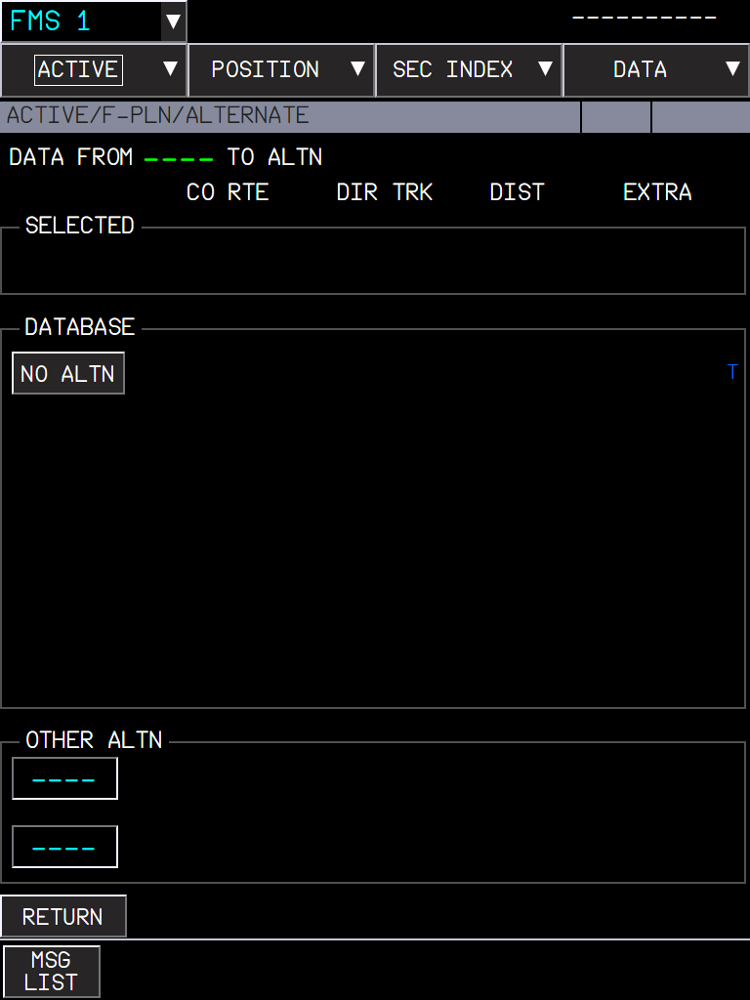

The ALTN fuel and time of FUEL&LOAD computed as the FCOM defines them, instead of a fixed 6.5 t
AircraftA380XWhere to find itMFD > ACTIVE > FUEL&LOAD (ALTN line) and ACTIVE > F-PLN > ALTERNATEPR branchpr/20-a380x-altn-fuel-computation (stacked on PR 10)StatusBuilt with 5 unit tests; checked in the sim during the fuel formula audit (September 2026).PicturesCaptain MFD in the local browser harness (no flight plan, so the values are dashes). The table in section 3 comes from the predictor of this feature run on its own.
1. What it is for
2. Where you see it
3. How much to expect
4. The computation
5. What to expect
6. Limitations and why
1. What it is for
The block fuel includes the fuel to divert to the alternate. FBW used a fixed 6.5 t, whatever the alternate. The A380 FCOM (DSC-22-FMS-20-30, FUEL&LOAD page) defines the ALTN fuel as the fuel (and time) for the trip from the primary destination to the landing at the alternate, computed with CI 0, at FL220 when the alternate route is shorter than 200 NM and FL310 otherwise. This is what the FMS computes now.
2. Where you see it
Figure 1. FUEL&LOAD: the ALTN line gets its fuel and its time; the arrival at the alternate (destination + ALTN time) is under ALTN in the UTC column.

Figure 2. ALTERNATE page: the fuel to each alternate (EXTRA column) uses the same computation.
The distance is the alternate flight plan distance, without its missed approach; without an alternate route, the direct distance.
The weight is the weight at the destination (ZFW + MIN FUEL AT DEST), with the ALTN wind of the WIND page.
No ZFW: no default ALTN fuel. The value is recomputed only when its inputs change.
3. How much to expect
Results of the predictor for an alternate close to sea level, fuel on board 12.5 t at the destination (fuel in tonnes / time in minutes / cruise level):
Alternate distance
ZFW 300 t
ZFW 344 t
ZFW 344 t, 30 kt headwind
ZFW 344 t, 30 kt tailwind
60 NM
2.3 t / 13 min / FL140
2.3 / 13 / FL120
2.5 / 14
2.1 / 12
100 NM
3.7 / 19 / FL220
3.7 / 19 / FL200
4.0 / 21
3.4 / 18
150 NM
4.9 / 26 / FL220
5.1 / 27 / FL220
5.5 / 29
4.8 / 25
199 NM
6.1 / 34 / FL220
6.3 / 34 / FL220
6.8 / 37
5.9 / 32
200 NM
6.3 / 32 / FL310
6.5 / 33 / FL310
6.9 / 36
6.2 / 31
300 NM
8.5 / 46 / FL310
8.8 / 46 / FL310
9.4 / 50
8.3 / 44
400 NM
10.8 / 59 / FL310
11.1 / 59 / FL310
11.8 / 64
10.4 / 56
500 NM
13.0 / 72 / FL310
13.3 / 73 / FL310
14.2 / 78
12.5 / 68
At 200 NM the level jumps from FL220 to FL310 (the FCOM rule): the time drops a little, the fuel rises a little.
Short alternates (60-100 NM) fly lower than FL220: the cruise level is lowered until the climb and the descent fit in the distance.
The old fixed value, 6.5 t, is about right only for an alternate 200 NM away.
4. The computation
Climb at climb thrust, cruise, idle descent, with the aircraft's VNAV prediction models (the same as the FMS predictions).
CI 0 speeds of the A380 FMS: 290 kt climb and cruise, 288 kt descent, M0.84, 250 kt below FL100.
5. What to expect
Situation
What you should see
No ZFW entered
ALTN fuel shown as dashes (no default).
Alternate route entered
ALTN fuel and time from its distance; the arrival time at the alternate in UTC.
No alternate route, alternate airport set
Computed on the direct distance.
ALTN wind entered
More fuel with a headwind, less with a tailwind.
6. Limitations and why
Limitation
Why
What to do
One mean wind for the alternate trip.
The FCOM computation uses the ALTN wind of the WIND page.
-
No holding or approach fuel in ALTN.
The FCOM definition ends at the landing at the alternate; FINAL covers the reserve.